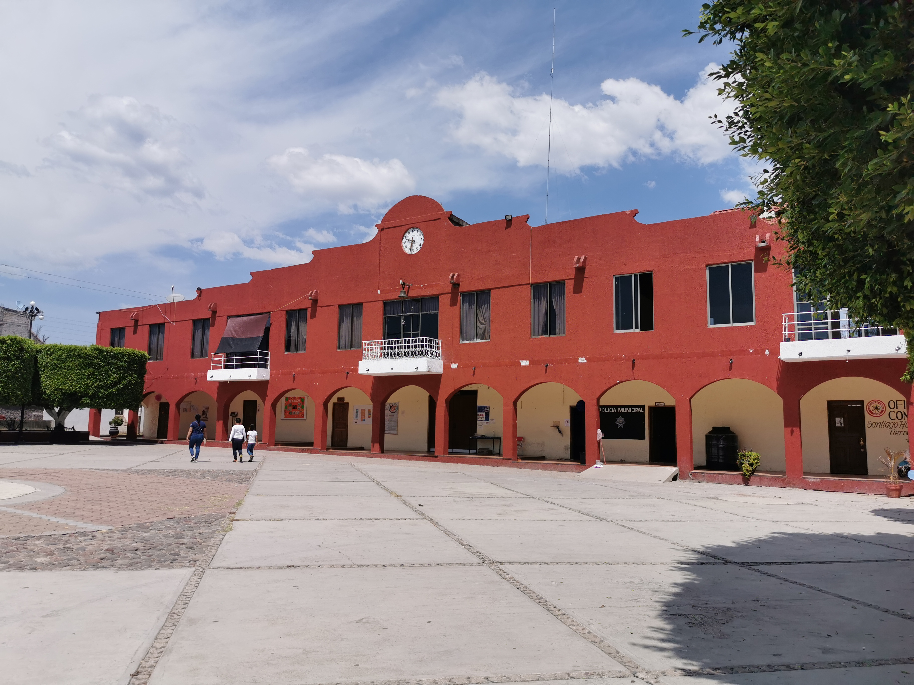

Guaxolotitlán de ayer, Huajolotitlán de hoy
"Huajolotitlán no es solo un lugar, es orgullo, historia y tradición."
Hablar de Santiago Huajolotitlán es hablar de un pueblo lleno de raíces, tradición y orgullo. Su nombre tiene origen en la lengua náhuatl y proviene de las palabras “huaxólotl”, que significa guajolote, y “titlán”, que se interpreta como lugar entre o lugar donde abundan. Por ello, Huajolotitlán significa “lugar donde abundan los guajolotes”, un nombre que ha permanecido a lo largo del tiempo y que representa parte de su identidad.
El nombre de “Santiago” fue agregado en honor a Santiago Apóstol, santo patrono del pueblo, cuya festividad sigue siendo una de las celebraciones más importantes para la comunidad.
Desde hace muchos años, este pueblo ha sido parte importante de la región Mixteca de Oaxaca. Sus primeros habitantes se dedicaban principalmente a la agricultura, cultivando maíz, frijol y otros alimentos que eran esenciales para su vida diaria. También se dedicaban al comercio y al cuidado de animales.
Con el paso del tiempo, Santiago Huajolotitlán fue creciendo y enfrentando cambios, pero nunca dejó atrás sus costumbres, sus tradiciones y el espíritu de unión entre su gente. Sus fiestas, su cultura y su historia siguen siendo motivo de orgullo para quienes viven ahí.
Hoy en día, Santiago Huajolotitlán continúa siendo un lugar lleno de historia, donde el pasado y el presente se unen para mantener viva la identidad de su pueblo.
